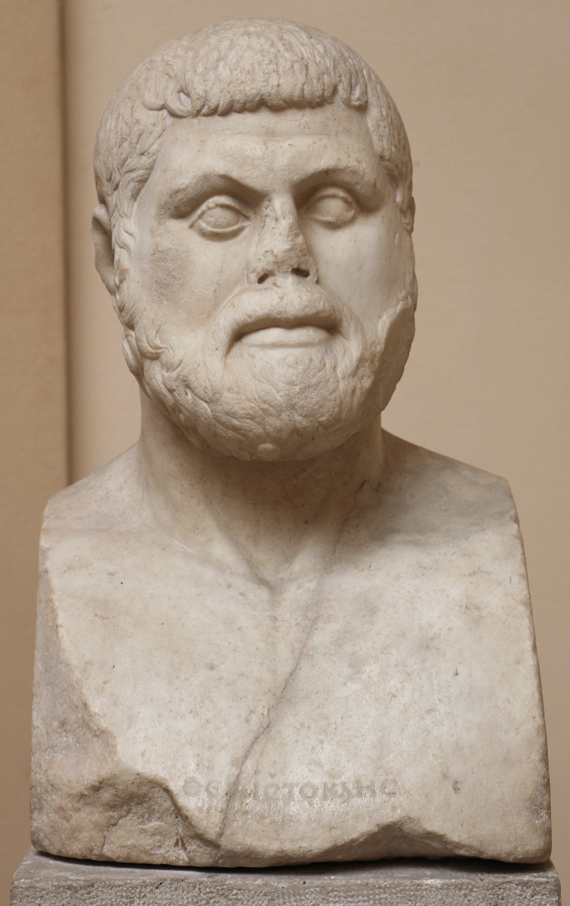
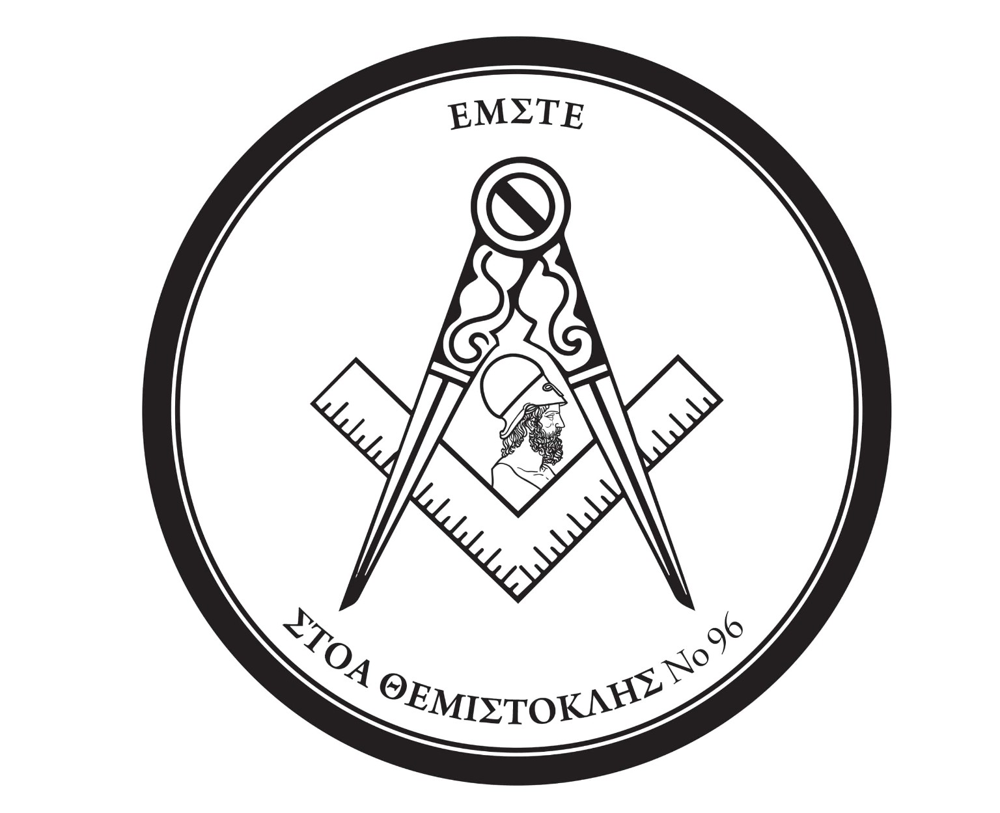
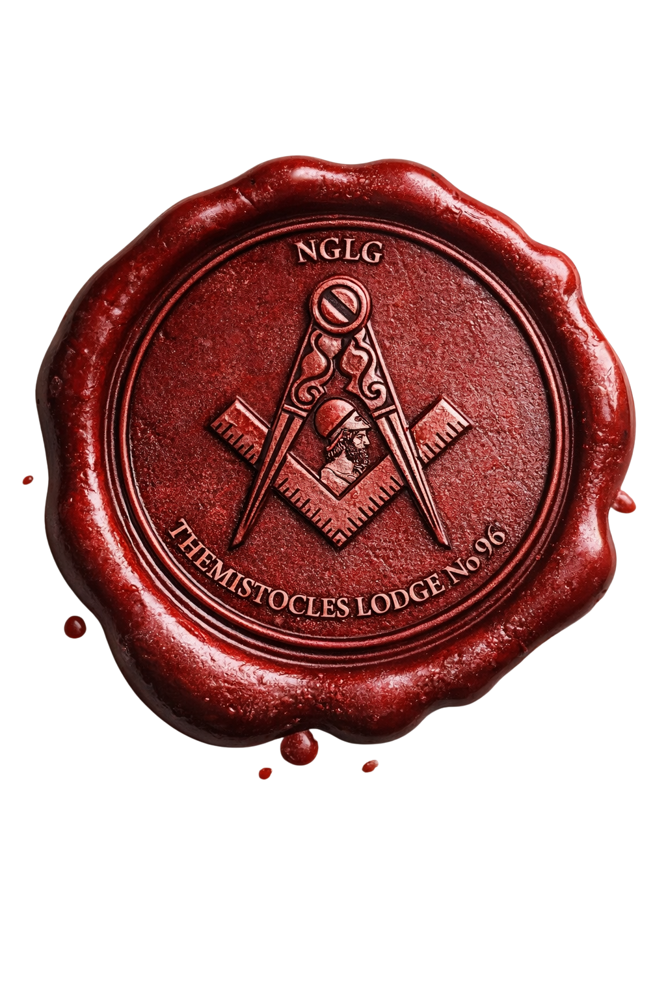

Σεβάσμιος Διδ.

Συμβολική Στοά
Θεμιστοκλής
υπ’ αριθμ. 96

Αξιωματικοί της Στοάς
Αξιωματικοί της Στοάς
2026 — 2027
Πρόγραμμα εργασιών
Η Στοά εργάζεται στο Τεκτονικό Μέγαρο Πειραιώς
ΝΟΕΜΒΡΙΟΥ 2026
20:00 — Εκδρομή της στοάς μας στην Ρόδο στην στοά Κάμειρος. Μύηση στον 2ο βαθμό των τεσσάρων αδελφών μας.
ΟΚΤΩΒΡΙΟΥ 2026
20:00 — Πρώτη συνεδρία της χρονιάς και πιθανώς μύηση των 2 υποψηφίων κυρίων.
20:00 — Ομιλία του αδελφού μας Σπύρου Σκιαδοπούλου στην στοά Τριπτόλεμος στο Μέγαρο της Ερεσού στην Αθήνα. Επίσημη επίσκεψη της στοάς ως Θεμιστοκλής.
ΣΕΠΤΕΜΒΡΙΟΥ 2026
11:00 — BBQ του ΜΔ μας, να φάμε και να πιούμε και να στηρίξουμε την υποτροφία «Στέφανος Παιπέτης» για τα παιδιά των Αδελφών μας.
17:30 — Πρόβα μύησης 1ου βαθμού και συμμετοχή στην έκτακτη μεγάλη συνέλευση της επαρχίας μας.

Θεμιστοκλής · υπ’ αριθμ. 96
Μητρώο Πρώην Σεβασμίων
Δημήτριος Σκιαδόπουλος
Σπυρίδων Σκιαδόπουλος
Γεώργιος Μαρτσούκος
Δημήτριος Σιώνης
Δημήτριος Ζωγραφάκης
Σωτήριος Χαραλάμπους